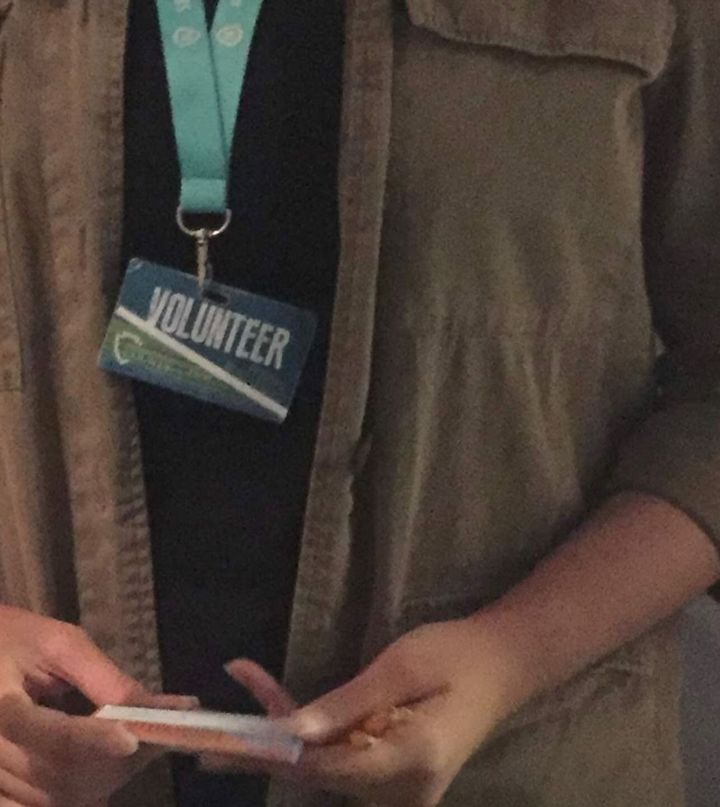
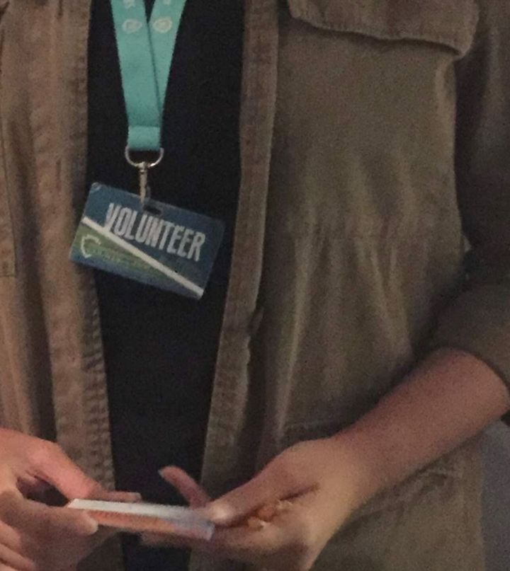
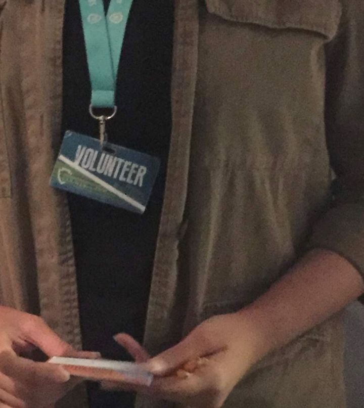

Vanessa Soto Carrillo
Student at University of California, Riverside
Graduating in the spring of 2022 with a Bachelor of Science in Biochemistry with a concentration in Biology (previously Medical emphasis).
I have discoved my passion for biochemistry and more specifically in the field of microbiology. I am hoping to gain more lab experience in any related field to learn as much as I can within the next few years.
I have really grown to enjoy the process of learning new things and I would consider applying to a graduate phD program in the future to continue my journey.
Most of my work experience comes from working as a tutor at the high school I graduated from back in 2018. I mainly tutor students in math and science from grades 9-12 in both CP and honors/AP classes. I really enjoyed
the years I spent there. I feel especially lucky to get to work a job that was as fulfilling as helping students from my own community better their grades and eventually apply and get into great universities.
The surplus of positive experiences I had made me consider going into teaching. After doing a lot of thinking and talking with the teachers I knew at the high school, I was
encouraged to give a career in science a try first. I greatly appreciated their advice, I have to try my hand at being a scientist first.
Experience
AVID Tutor
• Tutored at a local High School
• Organized and managed groups of highschoolers
• Experience with teaching and communicating in different ways
SAT Proctor
• Responsible for conducting SAT exams in a manner that is fair for students
• Checking students into the room by assesing the validity of their legal IDs and registration
Library Volunteer
• Organized books based on the decimal system and alphabetized
• Shelved carts of organized books across various floors
• Helped manage the Children's Reading Program and gained experience with Microsoft Exel
• Provided customer service within the program
Education
UC Riverside
Portfolio


 

